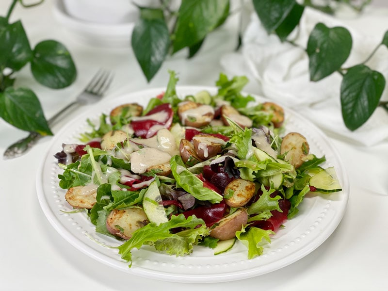

Shaved Beet and Potato Garden Salad | Plates of Inspiration
I tend to seek out the small pleasures in life. Today, I had a craving for red beets and decided that they were destined to be part of my salad. Should I slice, chop, or dice them? Nope, I shaved them! A cooked beet is a cooked beet, no matter what shape ends up at the end of my fork. But I had to tell you, shaving them with my hand-held mandoline made sort of made me giddy. Again, the small things in life!

Here in the PNW, we have been experiencing some cool, rainy spring days. With that chill comes a craving for warm comfort foods. So, I decided to take some already steamed baby red potatoes, cut them in half and warm them in a pan, cut side down. This gave them a little color, as well.
Now, I know this salad looks very simple, but remember, Plates of Inspiration was designed to inspire you or maybe at best make you a little hungry?! To get my greens in, I laid a thick bed of mixed greens, baby kale, and some microgreens on the plate. I then shaved some cooked beets and cucumber around the plate. By the time I was done with that, my baby potatoes were ready to be plated. To pull it all together, I drizzled some of my Creamy Dijon Dressing | Oil-free | Nut-free on top.
If you don’t like cooking beets or don’t have time to cook them, have you ever tried the precooked beets that you can buy at the grocery store? I typically find them in the produce section in a vacuum-sealed bag. They usually have 3-5 beets per package (depending on their size). I buy the organic ones if I need to cut corners in the kitchen. Costco usually sells them as well. Anyway, I just thought I would let you know.
So today’s inspiration comes in the form of a mandoline. Mine is a simple $10 hand-held version. Next time you make a boring salad, think about what ingredients can be shaved into thin slices. It will add a simple twist to your meal. May your days be filled with joy, peace, and nutritious and delicious foods! amie sue
© AmieSue.com